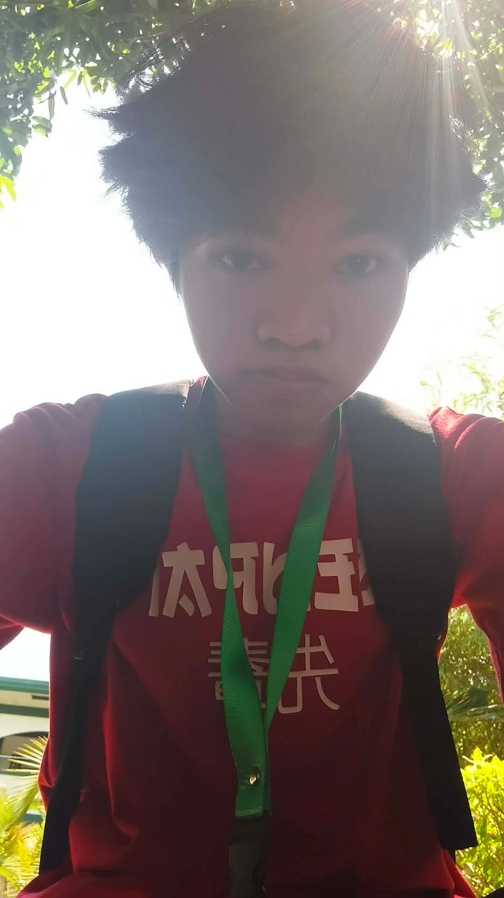
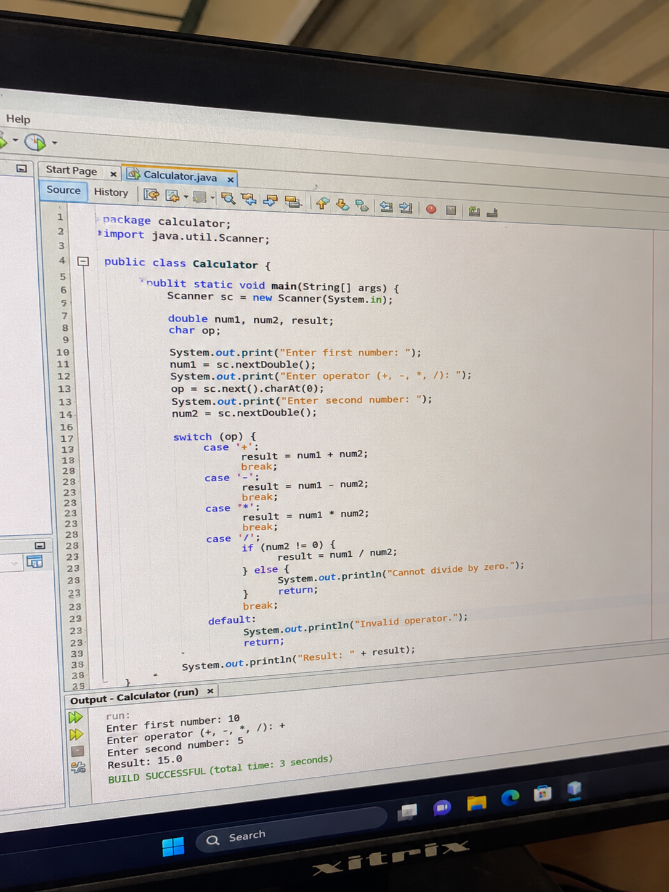
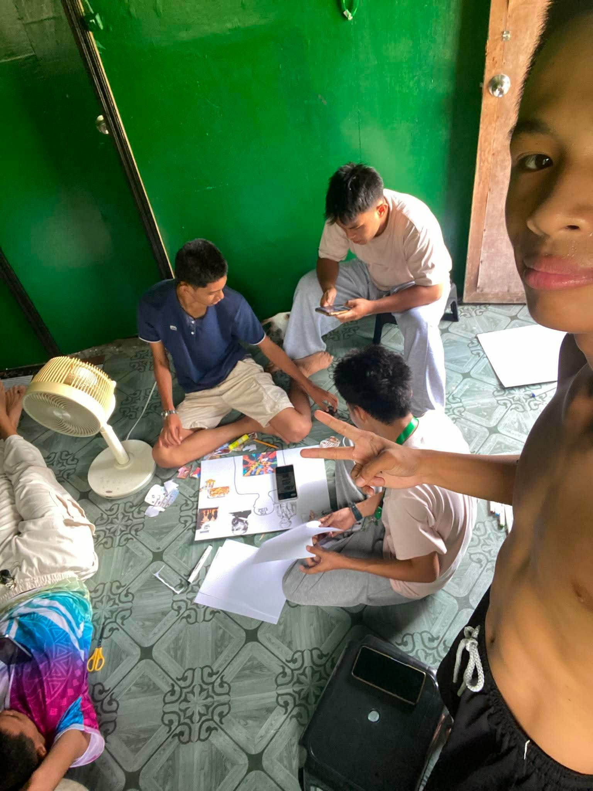

My BSIT Journey
From nervous freshman to future developer
My first year so far, one step at a time.
First day of class
This was me, waiting for my very first class as a BSIT student. A moment filled with excitement, curiosity, and a little nervousness about what was waiting ahead.
I entered college with expectations of meeting new people, learning new things, and discovering what the world of Information Technology had to offer. I knew that things would be different from what I was used to, and I wondered what college life would actually be like.
As the days passed, I realized that college wasn't just about attending classes and completing activities. It was also about adjusting, facing challenges, making mistakes, and learning things I had never encountered before.
Looking back, that first day was more than just the beginning of classes. It was the beginning of a journey I am still learning to navigate.

My first lines of code
Every programmer starts somewhere.
This was one of my first steps into the world of programming, a simple calculator made using Java.
At first, writing code seemed exciting, but also confusing. I started learning how to use variables, operators, and user input to make a program perform basic mathematical operations. The calculations themselves were easy to understand, but remembering the correct syntax, understanding how each line worked, and figuring out errors were entirely different challenges.
There were moments when a small mistake could prevent my program from running. But every error taught me something new, and every successful output gave me a little more confidence.
It may have been just a simple calculator, but to me, it was something meaningful. It was the beginning of my journey into programming, one line of code at a time.

Friends and deadlines
This was one of those college moments when teamwork was truly put to the test. We were given a project that required us to draw on a half-size illustration board, and let's just say, none of us were really good at drawing. HAHAHA!
At first, we weren't quite sure how we were going to pull it off. There were ideas, uncertainties, and a lot of figuring things out along the way. But despite our lack of drawing skills, we worked together, shared ideas, and did our best to finish what was assigned to us.
It wasn't just about completing a project before the deadline. It was also about learning how to cooperate, helping one another, and making the most out of what we had.
Looking back, it wasn't the drawing that made this experience memorable. It was the people I shared the experience with and the laughter we had along the way.

Building this blog
This is one of the projects I'm currently working on, and probably one of the most personal ones so far, building my very own website, Beyond the Screen.
When I first started, I barely understood how HTML and CSS worked together. I had to learn how to structure a webpage, organize its content, add images, create navigation links, and style everything to make the website look the way I imagined.
Of course, it wasn't always easy. There were moments when my images wouldn't appear, my layouts wouldn't cooperate, and even the simplest lines of code left me confused. Sometimes, I had to go back, check my code, and figure out what went wrong.
But along the way, I started understanding how everything connects. I realized that building a website isn't just about writing code; it's also about creativity, patience, problem-solving, and being willing to learn.
This blog may still have a long way to go, but every section, every design, and every line of code represents something I've learned.
And the best part? I'm building something that tells my own story.
Lessons Learned So Far
1. Time Management and Studying
I've learned that time management is important, especially when balancing school activities, projects, deadlines, and personal time. I realized that waiting until the last minute only makes things more stressful. It's better to start early, stay organized, and take things one step at a time.
2. Coding and Technology
I've learned that programming requires patience, practice, and willingness to make mistakes. Not every code will work on the first try, and sometimes even a small mistake can cause unexpected errors. But I've realized that errors aren't something to be afraid of because they are part of the learning process. Every problem I solve helps me understand something new.
3. Working With Others
I've learned that teamwork isn't always about having the same skills or ideas. It's about understanding one another, sharing responsibilities, and helping each other when things get difficult. Even when we don't know exactly what we're doing, working together makes challenges easier and experiences more memorable.